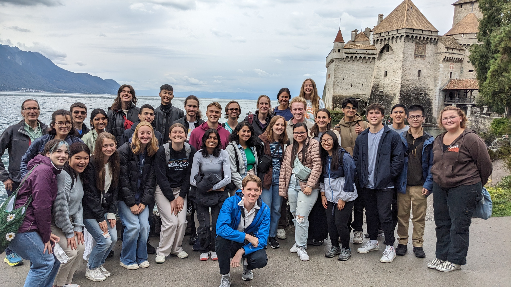

Graduate Teaching Assistant
University of Washington
Seattle, WA
EE 215: Fundamentals of Electrical Engineering
Jan 2023 - Present
Engineering Switzerland Study Abroad Program (EE 215)
Aug. 2023 – Sept. 2023 (Lausanne, Switzerland)

- Prepare materials and conduct quiz sections/lab meetings.
- Hold regular office hours, tutor students, and manage and respond to course-related emails.
- Proctor exams, grade exams and lab reports, and attend instructor/TA meetings.
- Create and re-organize the review materials and problem sets served in quiz sessions.
- Help organize lab materials, design quizzes, and lead quiz and lab sessions for Engineering Switzerland Study Abroad Program led by Prof. Karl Böhringer.
Undergraduate Teaching Assistant (OSU ENGR 1181 and 1182)
- Explored and led in-depth on various classical topics and design projects in the engineering field ranging from designing self-protection devices to safer storage system for grains with instructional team and students in the phase of the problem definition involved research plan, user needs, and value proposition, concept development, and detailed design.
- Attended assigned class and lab session to assist students in their development of basic skills in laboratories and lectures.
- Graded assignments, hold office hours, and conducted review sessions to help students prepare for exams.
- Joined in SILT(Student Instructional Leadership Team) Mentorship Program to share experience with new teaching assistants and freshman in the College of Engineering.
Humanitarian Engineering Scholar Program (Faculty Leader: Rachel Tuttle)
- Contributed to the thought and dialogue needed to create change in the value system of Humanitarian Engineering by exploring an ethical framework.
- Engineering concepts are applied to create solutions for local community via attending various community service.
- Established understanding of humanitarian engineering-related concepts which covered in 1181.02 and 1182.02, including varying hands-on team labs and a team design-build project (Advanced Energy Vehicle).
- Participated in a team design-build program (Toy Adaptation Program) to help children with disabilities.